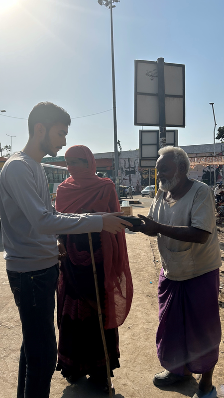
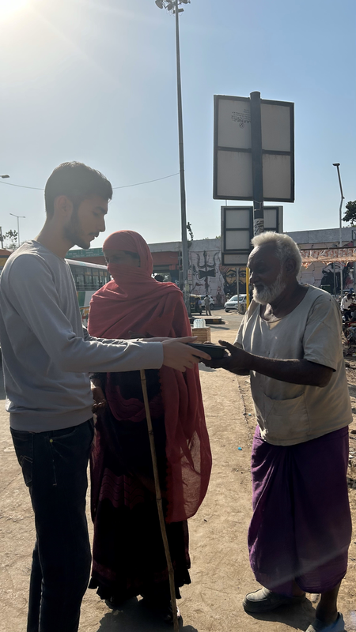

INTRODUCTION
Seraphim is the social awareness club of IIIT Lucknow, dedicated to creating a positive impact on society. With a focus on community service and awareness campaigns, we strive to make a meaningful difference in people's lives. At IIIT Lucknow, Seraphim stands as a beacon of awareness, empathy, and change. Our mission is to create an informed and compassionate community that actively engages with pressing social issues. From environmental sustainability and mental health awareness to gender equality and inclusivity, Seraphim fosters dialogue and initiates action that resonates beyond campus walls.
We believe in the power of collective effort to drive positive change, empowering students to not only understand the societal challenges around them but also to take meaningful steps toward resolving them. Through workshops, campaigns, discussions, and outreach programs, Seraphim is committed to nurturing socially conscious individuals who are ready to make a lasting impact on the world.
Our initiatives extend beyond just raising awareness; we aim to inspire action. Seraphim organizes events that unite students, faculty, and the larger community, encouraging them to collaborate on solutions for real-world problems. Be it through clean-up drives, tree-plantation events, blood donation camps, or mental health counseling sessions, our activities are grounded in the belief that small actions, when multiplied by many, can create waves of transformation.
At Seraphim, we emphasize inclusivity and representation, creating a safe space for all voices to be heard. By leveraging the diverse perspectives of our members, we craft innovative solutions and amplify underrepresented issues. We also partner with NGOs, local organizations, and industry experts to bring meaningful projects to life, ensuring that our efforts have a sustainable and measurable impact.
In a rapidly changing world, Seraphim acts as a platform for proactive leadership and growth, where students can develop critical skills such as empathy, teamwork, and communication. We believe that every individual has the potential to be a changemaker, and our goal is to provide the tools and opportunities to make that vision a reality. Together, we aspire to create a ripple effect of positivity, transcending boundaries and building a better tomorrow for everyone.
OUR PAST CAMPAIGNS
Creating an environment where menstruation is better understood, respected and supported. Seraphim took a huge leap towards change by educating and supporting the future leaders - our girl children. Together, we distributed free pads, ensuring that every girl has the freedom to focus on her dreams without any constraints. Let's break the barriers, one small act at a time.
Fueling change through kindness!
Our members recently held a heartwarming food drive, turning surplus meals into hope for those in need. Together, we transform our values into action, empowering communities with every smile and shared meal. Be a part of our mission to make a lasting impact—join us for more social initiatives like this!
Small changes lead to a cleaner tomorrow! 🌱 We kicked off Swachhta Pakhwada by tidying up our rooms—because cleanliness begins at home. Let's continue to make a difference! 💪
Growing a greener tomorrow, one tree at a time! 🌱 Team seraphim had organized a tree plantation drive on the occasion of Gandhi Jayanti. Together, we’re making a positive impact on our campus and our planet. 🌎💚